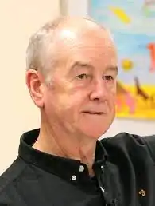

Девід Амонд (Алмонд) (англ. David Almond) — англійський письменник, відомий перш за все як автор творів, орієнтованих на дитячу та підліткову аудиторію, і написаних у жанрі магічного реалізму. У 2010 році Амонд став лауреатом Премії імені Х. К. Андерсена, яка вручається за внесок у дитячу літературу.
Девід Алмонд народився місті Ньюкасл-апон-Тайн 15 травня 1951 року у католицької семье. Він здобув освіту в Університеті Східної Англії, потім протягом п'яти років працював учителем. Якийсь час Алмонд жив у комуні художників і письменників, після чого повернувся до рідної Ньюкасл.
На питання про вимову свого прізвища письменник відповідає: "Точно як мигдальний горіх", тобто almond [a: mond]. У 1985 році була опублікована перша книга Алмонда, "Бесонні ночі" (англ. Sleepless Nights), збірка оповідань, орієнтована на дорослу аудиторію. Перший дитячий роман письменника побачив світ 1998 року, і звався "Скелліг" (англ. Skellig). Книга отримала широкий успіх, на основі її сюжету було знято однойменний фільм, було поставлено театральну постановку та оперу. Алмонд отримав Медаль Карнегі та Уітбредівську премію. Наступний твір письменника, "Kit's Wilderness", опублікований в 1999 став володарем премії імені Майкла Прінса Американської бібліотечної асоціації. Книга "The Fire-Eaters", опублікована 2003 року, отримала Уітбредівську премію у категорії "Краща дитяча книга". Роман "Глина" (англ. Clay), опублікований у 2005 році, був номінований на здобуття премії "Guardian", а також включений Американською бібліотечною асоціацією до списку кращих книг 2007 року для підлітків. Роман був екранізований 2008 року. Роботи Алмонда перекладені більш ніж 20 мов. У 2010 році він став лауреатом Премії імені Х. К. Андерсена, яку часто називають "Нобелівською премією для дитячих письменників". Нині письменник зі своєю сім'єю живе у графстві Нортумберленд на північному сході Англії. У 2020 році за мотивами роману "Ангеліно Браун" було знято однойменний театральний серіал, що складається з 9 серій.